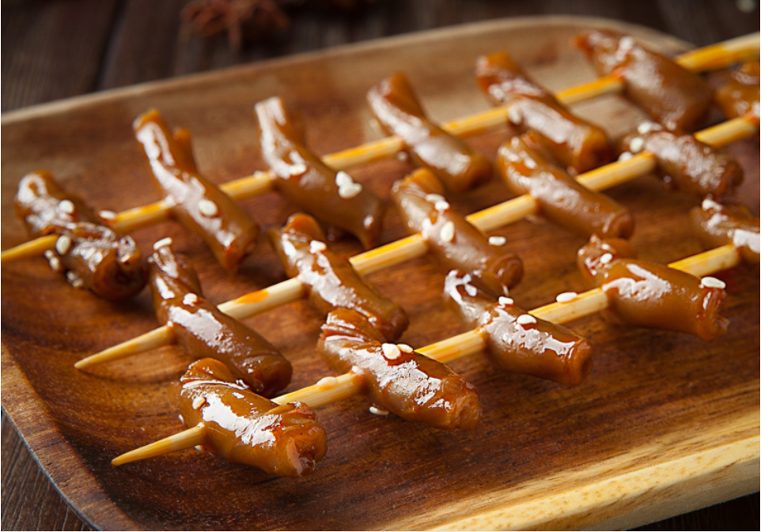
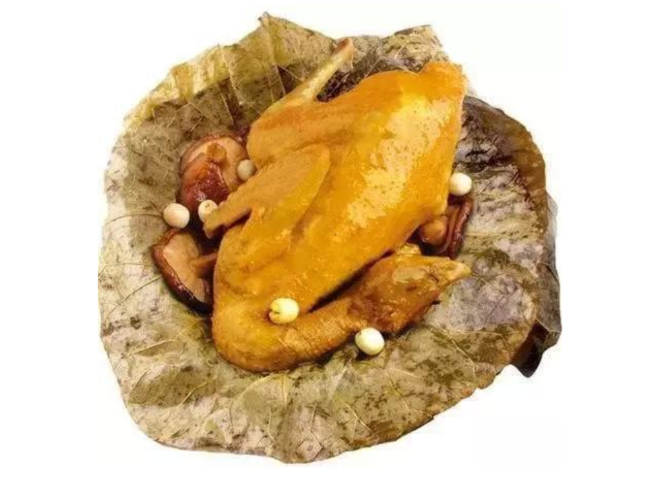
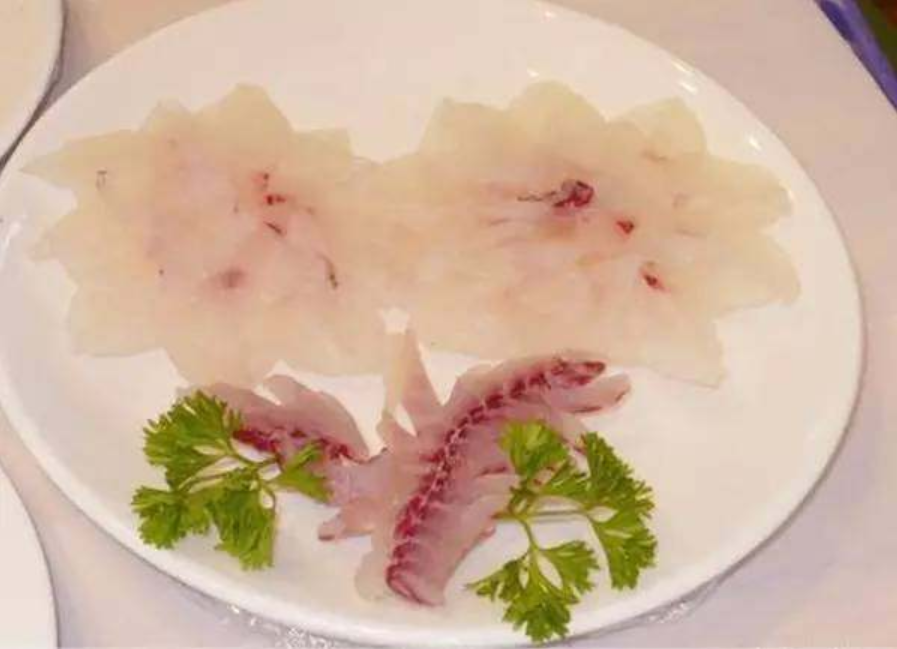

1.筋多多卤猪鞭
筋多多独创“以油入味”工艺，精选筋道食材，在传统卤味制作工艺基础上，精心从营养健康食物油中提炼出亚油酸，并且通过36道复杂的工序将食材进行祛异味，将含有丰富亚油酸的油卤入到筋多多的食材里面。筋多多使用“以油入味”工艺制作卤猪鞭，味道独特，脆口，含有丰富亚油酸，好吃又健康！
2.田东十里荷香鸡
田东十里荷香鸡是使用百色田东县十里莲塘原生荷叶清蒸制作而成，骨细皮爽，肉质滑嫩，色泽橘红亮丽，似有若无的荷叶幽香令人胃口大开，口味绵长。2006年南宁东南亚国际旅游美食节上，十里荷香鸡荣获金奖，并获得“广西名菜”称号。
3.西林羊瘪汤
西林“羊瘪汤”是广西百色市西林县的风味特色之一。利用山羊的内脏制作的一道风味独特的佳肴，是接待宾客的上乘菜。
4.横县鱼生
广西南宁横县鱼生代表着当地烹饪技术和餐饮文化的最高水准。做鱼生每个步骤都讲究刀工技术，去鳞，脱皮，起骨，摆盘，每个细节都要求做到完美无瑕。
